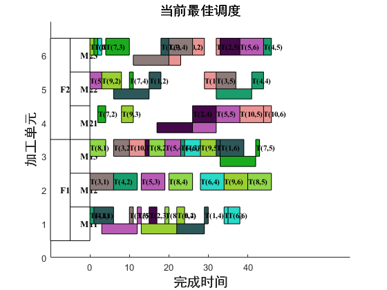
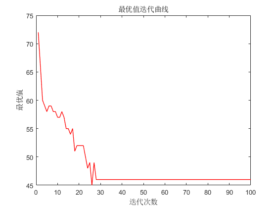

clear all
clc
close all
rng shuffle
start = cputime;
source = '../DataSet/mk/Mk01_DFJSP.mat';
numOfIterate = 100;
numOfPopulation = 150;
P_c0 = 0.8;
P_m = 0.01;
Re = 0.4;
K = Re * numOfPopulation;
load(source);
PopulationTs = zeros(numOfPopulation,numOfSubTasks);
PopulationFs = zeros(numOfPopulation,numOfSubTasks);
PopulationMs = zeros(numOfPopulation,numOfSubTasks);
for i = 1:numOfPopulation
[PopulationTs(i,:),PopulationFs(i,:),PopulationMs(i,:)] = randomInit(numOfSubTasks,vectorSubTaskSequence,numOfFactory,tableOfFactoryOptional,mcellPerFactory,tableOfMcellOptional);
end
PopulationTs_iter = zeros(numOfPopulation,numOfSubTasks,numOfIterate);
PopulationFs_iter = zeros(numOfPopulation,numOfSubTasks,numOfIterate);
PopulationMs_iter = zeros(numOfPopulation,numOfSubTasks,numOfIterate);
makespan_population_T_iter = zeros(numOfIterate,numOfPopulation);
makespan_best_T_iter = zeros(numOfIterate,1);
start_Time_iter = zeros(numOfTotalMcell,numOfSubTasks,numOfPopulation,numOfIterate);
end_Time_iter = zeros(numOfTotalMcell,numOfSubTasks,numOfPopulation,numOfIterate);
start_Time_T_iter = zeros(numOfTotalMcell,numOfSubTasks,numOfPopulation,numOfIterate);
end_Time_T_iter = zeros(numOfTotalMcell,numOfSubTasks,numOfPopulation,numOfIterate);
index_Population_T_iter = zeros(1,2,numOfIterate);
index_best_T_iter = zeros(numOfIterate,1);
PopulationTs_iter(:,:,1) = PopulationTs;
PopulationFs_iter(:,:,1) = PopulationFs;
PopulationMs_iter(:,:,1) = PopulationMs;
[start_Time_pop,end_Time_pop,start_Time_T_pop,end_Time_T_pop] = decode(numOfTasks,numOfSubTasks,vectormcellPerFactory,numOfTotalMcell,vectorNumSubTasks,vectorSumOfSubTasks,numOfPopulation,PopulationTs,PopulationFs,PopulationMs,tableOfTransTime,tableOfManuTime);
[makespan_population_T,makespan_best_T,index_best_T,index_Population_T] = fitness(end_Time_pop,numOfPopulation);
makespan_population_T_iter(1,:) = makespan_population_T;
makespan_best_T_iter(1,:) = makespan_best_T;
start_Time_iter(:,:,:,1) = start_Time_pop;
end_Time_iter(:,:,:,1) = end_Time_pop;
start_Time_T_iter(:,:,:,1) = start_Time_T_pop;
end_Time_T_iter(:,:,:,1) = end_Time_T_pop;
index_Population_T_iter(:,:,1) = index_Population_T;
index_best_T_iter(1,:) = index_best_T;
for iter = 1:numOfIterate-1
P_c = P_c0 * ((numOfIterate-iter)/numOfIterate);
PopulationTs_merge0 = PopulationTs_iter(:,:,iter);
PopulationFs_merge0 = PopulationFs_iter(:,:,iter);
PopulationMs_merge0 = PopulationMs_iter(:,:,iter);
makespan_population_merge0 = makespan_population_T_iter(iter,:);
[PopulationTs_elite,PopulationFs_elite,PopulationMs_elite,makespan_population_elite0,PopulationTs_ordinary,PopulationFs_ordinary,PopulationMs_ordinary,makespan_population_ordinary0] = classifyPopulation(numOfPopulation,PopulationTs_merge0,PopulationFs_merge0,PopulationMs_merge0,makespan_population_merge0,K);
[PopulationTs_elite_new,PopulationFs_elite_new,PopulationMs_elite_new] = eliteSelection(K,numOfSubTasks,PopulationTs_elite,PopulationFs_elite,PopulationMs_elite,makespan_population_elite0);
[PopulationTs_elite_new1,PopulationFs_elite_new1,PopulationMs_elite_new1] = crossover(PopulationTs_elite_new,PopulationFs_elite_new,PopulationMs_elite_new,P_c,K,numOfTasks,numOfSubTasks);
[PopulationTs_elite_new2,PopulationFs_elite_new2,PopulationMs_elite_new2] = mutation(PopulationTs_elite_new1,PopulationFs_elite_new1,PopulationMs_elite_new1,P_m,numOfTasks,K,mcellPerFactory,vectorNumSubTasks,vectorSumOfSubTasks,vectormcellPerFactory,tableOfMcellOptional,tableOfFactoryOptional);
[start_Time_pop_elite,end_Time_pop_elite,start_Time_T_pop_elite,end_Time_T_pop_elite] = decode(numOfTasks,numOfSubTasks,vectormcellPerFactory,numOfTotalMcell,vectorNumSubTasks,vectorSumOfSubTasks,K,PopulationTs_elite_new2,PopulationFs_elite_new2,PopulationMs_elite_new2,tableOfTransTime,tableOfManuTime);
[makespan_population_elite,makespan_best_elite,index_best_elite,index_Population_elite] = fitness(end_Time_pop_elite,K);
[makespan_population_elite1,index_elite1] = sort(makespan_population_elite);
makespan_population_elite2 = makespan_population_elite1(1:K/2,:);
PopulationTs_elite_new3 = PopulationTs_elite_new2(index_elite1(1:K/2),:);
PopulationFs_elite_new3 = PopulationFs_elite_new2(index_elite1(1:K/2),:);
PopulationMs_elite_new3 = PopulationMs_elite_new2(index_elite1(1:K/2),:);
[PopulationTs_ordinary_new,PopulationFs_ordinary_new,PopulationMs_ordinary_new] = ordinarySelection(numOfPopulation,K,numOfSubTasks,PopulationTs_ordinary,PopulationFs_ordinary,PopulationMs_ordinary,makespan_population_ordinary0);
[PopulationTs_ordinary_new1,PopulationFs_ordinary_new1,PopulationMs_ordinary_new1] = crossover(PopulationTs_ordinary_new,PopulationFs_ordinary_new,PopulationMs_ordinary_new,P_c,K,numOfTasks,numOfSubTasks);
[PopulationTs_ordinary_new2,PopulationFs_ordinary_new2,PopulationMs_ordinary_new2] = mutation(PopulationTs_ordinary_new1,PopulationFs_ordinary_new1,PopulationMs_ordinary_new1,P_m,numOfTasks,K,mcellPerFactory,vectorNumSubTasks,vectorSumOfSubTasks,vectormcellPerFactory,tableOfMcellOptional,tableOfFactoryOptional);
[start_Time_pop_ordinary,end_Time_pop_ordinary,start_Time_T_pop_ordinary,end_Time_T_pop_ordinary] = decode(numOfTasks,numOfSubTasks,vectormcellPerFactory,numOfTotalMcell,vectorNumSubTasks,vectorSumOfSubTasks,K,PopulationTs_ordinary_new2,PopulationFs_ordinary_new2,PopulationMs_ordinary_new2,tableOfTransTime,tableOfManuTime);
[makespan_population_ordinary,makespan_best_ordinary,index_best_ordinary,index_Population_ordinary] = fitness(end_Time_pop_ordinary,K);
[makespan_population_ordinary1,index_ordinary1] = sort(makespan_population_ordinary);
makespan_population_ordinary2 = makespan_population_ordinary1(1:K/2,:);
PopulationTs_ordinary_new3 = PopulationTs_ordinary_new2(index_elite1(1:K/2),:);
PopulationFs_ordinary_new3 = PopulationFs_ordinary_new2(index_elite1(1:K/2),:);
PopulationMs_ordinary_new3 = PopulationMs_ordinary_new2(index_elite1(1:K/2),:);
[PopulationTs_hybrid,PopulationFs_hybrid,PopulationMs_hybrid] = hybridSelection(numOfSubTasks,numOfPopulation,K,PopulationTs_elite,PopulationFs_elite,PopulationMs_elite,makespan_population_elite0,PopulationTs_ordinary,PopulationFs_ordinary,PopulationMs_ordinary,makespan_population_ordinary0);
[PopulationTs_hybrid_new,PopulationFs_hybrid_new,PopulationMs_hybrid_new] = crossover(PopulationTs_hybrid,PopulationFs_hybrid,PopulationMs_hybrid,P_c,numOfPopulation-K,numOfTasks,numOfSubTasks);
[PopulationTs_hybrid_new1,PopulationFs_hybrid_new1,PopulationMs_hybrid_new1] = mutation(PopulationTs_hybrid_new,PopulationFs_hybrid_new,PopulationMs_hybrid_new,P_m,numOfTasks,numOfPopulation-K,mcellPerFactory,vectorNumSubTasks,vectorSumOfSubTasks,vectormcellPerFactory,tableOfMcellOptional,tableOfFactoryOptional);
[start_Time_pop_hybrid,end_Time_pop_hybrid,start_Time_T_pop_hybrid,end_Time_T_pop_hybrid] = decode(numOfTasks,numOfSubTasks,vectormcellPerFactory,numOfTotalMcell,vectorNumSubTasks,vectorSumOfSubTasks,numOfPopulation-K,PopulationTs_hybrid_new1,PopulationFs_hybrid_new1,PopulationMs_hybrid_new1,tableOfTransTime,tableOfManuTime);
[makespan_population_hybrid,makespan_best_hybrid,index_best_hybrid,index_Population_hybrid] = fitness(end_Time_pop_hybrid,numOfPopulation-K);
PopulationTs_merge1 = [PopulationTs_elite_new3;PopulationTs_ordinary_new3;PopulationTs_hybrid_new1];
PopulationFs_merge1 = [PopulationFs_elite_new3;PopulationFs_ordinary_new3;PopulationFs_hybrid_new1];
PopulationMs_merge1 = [PopulationMs_elite_new3;PopulationMs_ordinary_new3;PopulationMs_hybrid_new1];
[start_Time_pop_merge,end_Time_pop_merge,start_Time_T_pop_merge,end_Time_T_pop_merge] = decode(numOfTasks,numOfSubTasks,vectormcellPerFactory,numOfTotalMcell,vectorNumSubTasks,vectorSumOfSubTasks,numOfPopulation,PopulationTs_merge1,PopulationFs_merge1,PopulationMs_merge1,tableOfTransTime,tableOfManuTime);
[makespan_population_merge,makespan_best_merge,index_best_merge,index_Population_merge] = fitness(end_Time_pop_merge,numOfPopulation);
[TS_set,FS_set,MS_set,L] = localSearch(numOfFactory,numOfTasks,numOfSubTasks,PopulationTs_merge1,PopulationFs_merge1,PopulationMs_merge1,index_best_merge,index_Population_merge,tableOfManuTime,vectorNumSubTasks,vectorSumOfSubTasks,end_Time_pop_merge(:,:,index_best_merge),vectormcellPerFactory,mcellPerFactory);
for c = 1:L
TS = TS_set(c,:);
FS = FS_set(c,:);
MS = MS_set(c,:);
[start_Time_M0,end_Time_M0,start_Time_T0,end_Time_T0] = decode(numOfTasks,numOfSubTasks,vectormcellPerFactory,numOfTotalMcell,vectorNumSubTasks,vectorSumOfSubTasks,1,TS,FS,MS,tableOfTransTime,tableOfManuTime);
[makespan_LC,~,~,index_LC] = fitness(end_Time_M0,1);
if makespan_LC <= makespan_best_merge
PopulationTs_merge1(index_best_merge,:) = TS;
PopulationFs_merge1(index_best_merge,:) = FS;
PopulationMs_merge1(index_best_merge,:) = MS;
start_Time_pop_merge(:,:,index_best_merge) = start_Time_M0;
end_Time_pop_merge(:,:,index_best_merge) = end_Time_M0;
start_Time_T_pop_merge(:,:,index_best_merge) = start_Time_T0;
end_Time_T_pop_merge(:,:,index_best_merge) = end_Time_T0;
makespan_population_merge(index_best_merge,1) = makespan_LC;
makespan_best_merge = makespan_LC;
index_Population_merge = index_LC;
end
end
PopulationTs_iter(:,:,iter+1) = PopulationTs_merge1;
PopulationFs_iter(:,:,iter+1) = PopulationFs_merge1;
PopulationMs_iter(:,:,iter+1) = PopulationMs_merge1;
makespan_population3 = makespan_population_merge.';
makespan_population_T_iter(iter+1,:) = makespan_population3;
makespan_best_T_iter(iter+1,1) = makespan_best_merge;
start_Time_iter(:,:,:,iter+1) = start_Time_pop_merge;
end_Time_iter(:,:,:,iter+1) = end_Time_pop_merge;
start_Time_T_iter(:,:,:,iter+1) = start_Time_T_pop_merge;
end_Time_T_iter(:,:,:,iter+1) = end_Time_T_pop_merge;
index_best_T_iter(iter+1,1) = index_best_merge;
index_Population_T_iter(:,:,iter+1) = index_Population_merge;
end
endtime = cputime - start;
figure(1)
makespan_best = makespan_best_T_iter(numOfIterate,1);
index = index_best_T_iter(numOfIterate,1);
start_Time_best = start_Time_iter(:,:,index,numOfIterate);
end_Time_best = end_Time_iter(:,:,index,numOfIterate);
start_Time_T_best = start_Time_T_iter(:,:,index,numOfIterate);
end_Time_T_best = end_Time_T_iter(:,:,index,numOfIterate);
PopulationTs_best = PopulationTs(index,:);
ganttGraph(numOfFactory,mcellPerFactory,vectormcellPerFactory,numOfTasks,numOfSubTasks,numOfTotalMcell,makespan_best,start_Time_best,end_Time_best,start_Time_T_best,end_Time_T_best,PopulationTs_best,vectorSumOfSubTasks)
figure(2)
x = 1:numOfIterate;
y = makespan_best_T_iter.';
makespan = plot(x,y,'r','LineWidth',1);
title('最优值迭代曲线')
xlabel('迭代次数')
ylabel('最优值')
 